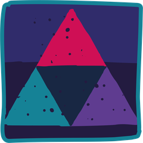

NVR Essentials: non-violent resistance trainingOne day. A full framework.
Training that helps your team respond as one when a young person’s behaviour escalates. You leave with practised cold-iron lines and a plan for your first team NVR session.
- Length
- 6 hours face to face, or 2 hours online
- Group
- Up to 60 face to face, 200 online
- For
- Children’s homes, foster carers and social workers
- Included
- Workbook, 12 months online, certificate
When a young person’s behaviour escalates, adults often fall back on instinct. Some raise their voice. Some back off. Each shift and each household responds differently, and restraint can become the default. The Children’s Homes Regulations 2015 expect staff to de-escalate confrontations. The Fostering National Minimum Standards expect carers to be trained in de-escalating problems and disputes. Neither tells a team what to say at 11pm when a door is being kicked. This day does.
Who it’s for
Children’s homes
Residential support workers, team leaders and registered managers
Foster and kinship care
Carers, supervising social workers and fostering team leaders
Early help workers
Early help and family workers who coach parents
- Up to 60 face to face, 200 online
- Mixed residential and fostering groups work well
- No prior NVR knowledge needed
- Service leads go on to NVR Advanced
Learning outcomes
By the end of the course, people will be able to:
- 1
Describe an escalation from the young person’s side and from the adult’s, including how shouting, threats or backing off can feed it.
- 2
Recognise which of a young person’s behaviours they need to resist, which they can negotiate and which they can let go.
- 3
Explain the principles of non-violent resistance, developed by Haim Omer (2004), how they differ from reward and sanction approaches, and describe the seven pillars of NVR and the three dimensions of adult presence.
- 4
Explain how NVR supports the positive relationships standard in the Children’s Homes Regulations and Standard 3 of the Fostering National Minimum Standards, and describe honestly what the research does and does not yet show.
- 5
Use cold-iron lines, delayed responses and baskets to de-escalate a hot moment without giving in.
- 6
Plan a reconciliation gesture and an act of resistance for a young person they care for now, and a first NVR session for their own team.
Our learning framework in this course
Every Care Leaders Learning course follows Story, Theory, Action. Here is how it runs through NVR Essentials.
Story
Every part follows one young person’s week in a children’s home.
One composite story runs through all four parts. Reece, 15, kicks the office door over the Wi-Fi, then wakes to his favourite toast. Six weeks on, his home responds as one.

Theory
Then the NVR thinking behind each moment.
Haim Omer’s Non-Violent Resistance, his work on the new authority and the seven pillars of NVR. Dan Siegel’s window of tolerance explains why the adult can wait.
Action
Then something people practise in pairs or small groups.
The NVR framework on one page and practised cold-iron lines. A baskets sort and a reconciliation gesture menu for a young person you care for. A plan for your first team NVR session.
The course in four parts
Each part follows Reece’s week in a children’s home, explains it with NVR and ends with practice in pairs. The stories are composites. They draw on real experiences of care but are not one person. Open a part to see what happens.
1The NVR stance (morning)
Story. Reece, 15, has lived in the home for six months. When staff tell him the Wi-Fi goes off at 11, he kicks the office door until it does not. The night staff give in. The day staff take his phone for a week. Reece learns that whoever shouts loudest wins.
Theory. Haim Omer’s Non-Violent Resistance (2004) began with parents facing violent and controlling behaviour from their children, and borrows from the history of non-violent political resistance. Omer’s later work on the new authority (2011) shifts the adult’s aim from control to presence. We set out the seven pillars of NVR on one page, and what the evidence shows for foster and residential care.
Action. Staff map Reece’s door-kicking cycle from both sides, then find where the adults’ responses fed it. Each person then names the one adult habit they will drop first.
By the end of this part people can explain the shift from control to presence in their own words, and describe the seven pillars to a colleague.
You leave with The NVR framework on one page, with the seven pillars and a short evidence summary.
2De-escalation (morning)
Story. Reece is in the kitchen at 10:55pm, phone in hand, waiting to see what the adult will do. The adult can feel their own heart racing.
Theory. Strike when the iron is cold: in NVR, the adult does not have to respond in the hot moment. Delaying is not giving in. Dan Siegel’s window of tolerance (1999) explains why: neither Reece nor the adult can think well at the peak, and both need time to come back down.
Action. Staff practise short cold-iron lines (for example, “I’m not going to argue now. We will talk about this”) and delayed responses in pairs, on situations they actually face. Then they use baskets to sort one young person’s behaviours into those to resist, those to negotiate and those to let go.
By the end of this part people can use a cold-iron line in a hot moment, and complete a baskets sort for a young person they care for.
You leave with Cold-iron lines, a baskets sort for one young person and the hot-moment protocol, practised.
3Reconciliation and resistance (afternoon)
Story. The morning after, Reece comes down for breakfast expecting a row. Instead, a member of staff has made his favourite toast. At 4pm, three staff come to his room and tell him calmly that the door-kicking has to stop and they will do all they can to stop it.
Theory. Resist the behaviour, never the child. In Omer’s approach, reconciliation gestures come with no conditions, so the relationship never depends on behaviour. Acts of resistance, such as the announcement and the sit-in, show the young person that the adults are united and will not go away, without threats or punishment.
Action. Staff build a menu of reconciliation gestures for a young person they care for, then plan and rehearse an announcement in small groups on residential and fostering scenarios, taking turns as the young person.
By the end of this part people can plan a reconciliation gesture and an announcement for a young person they care for, and explain the difference between resistance and punishment.
You leave with A reconciliation gesture menu and a planned act of resistance for a young person you care for.
4Leading it in your team (afternoon)
Story. Six weeks on, the day staff and night staff in Reece’s home finally respond the same way. The door-kicking has not stopped yet, but it is shorter, and Reece has started talking to one of the night staff.
Theory. NVR works when adults are not alone. Omer’s support network and the systemic side of adult presence explain why a shared response across shifts and households matters more than any one adult’s skill.
Action. Staff map their own supporters, agree a simple record of what they tried and what happened, and plan the first NVR session they will run with their own team.
By the end of this part people can name their supporters, keep a simple NVR record, and plan a first session with their own team.
You leave with A plan for your first NVR session with your team.
What you get with each course
Included for every delegate, however you run it.
A workbook to keep
Every delegate gets their own copy, with the stories, the tools and space to plan.
The online course for 12 months
An interactive course on The Care Leaders Online, for 12 months after the training.
The recording for 12 months
Live online sessions are recorded, so people can catch up or go back over a part.
A certificate of completion
For each delegate, to keep for their own development record.
Choose how you run it
Two ways to run the course.
Face to face
A full day in your building or a venue you choose, 10am to 4pm, with practice in pairs and small groups. The morning covers the stance and de-escalation. The afternoon covers reconciliation, resistance and leading it in your team.
- When One day, 10am to 4pm
- Group Up to 60 people
- You provide A screen or projector with an HDMI connection
- We provide The facilitator, a workbook for every delegate and 12 months of the online course
Live online
A live session on Teams or Zoom covering the key story, theory and tool from each part. It suits a dispersed team, with breakout rooms for practice in pairs.
- When One 2-hour session
- Group Up to 200 people
- You provide A device with a camera, microphone and internet connection for each delegate
- We provide The facilitator, the online links for delegates, a workbook for every delegate, 12 months of the online course and the recording
What changes
- Use one shared NVR language for aggression, violence and controlling behaviour, across shifts and households.
- Delay their response in the hot moment, using short, calm lines instead of threats or lectures.
- Plan acts of resistance with colleagues and supporters instead of acting alone.
- Offer reconciliation gestures every day, without waiting for the young person to earn them.
- Plan and run a first NVR session with their own team.
- Adults who stay calm and present when things escalate, rather than shouting or walking away
- The same response from every adult, whoever is on shift
- Repair after a hard moment, so the relationship is not left broken
- Adults who resist the behaviour, never the child
NVR training for Durham County Council’s children’s homes reached 120 residential staff across 11 homes.
Read the case studyQuestions commissioners ask
How is the day structured?
Four parts, two before lunch and two after, each built the same way. Story: a moment from one young person’s week, such as Reece kicking the office door at 11pm. Theory: the NVR thinking that explains it, from Haim Omer’s shift from control to presence to strike when the iron is cold. Action: something people practise in pairs or small groups, from cold-iron lines to planning an announcement. The day ends with a plan for a first NVR session with your own team.
Does NVR fit what Ofsted expects?
NVR gives staff a structured way to do what the rules already ask: de-escalate confrontations, under the positive relationships standard in the Children’s Homes Regulations 2015, and promote positive behaviour and relationships, under Standard 3 of the Fostering National Minimum Standards. It sits alongside your behaviour management and restraint policies, not in place of them. The day shows managers how to explain and evidence that link.
What is the evidence for NVR?
NVR was developed by Haim Omer in Israel for parents facing violent or controlling behaviour. Randomised trials with parents found reduced parental helplessness, and a 2016 review by Omer and Lebowitz describes the evidence as encouraging but still early. A randomised trial with foster carers found carers used more monitoring and support, but no clear difference in children’s behaviour. We say this plainly on the day.
Is it for fostering as well as children’s homes?
Yes. It is for residential managers and staff, fostering team leaders, supervising social workers, foster carers, and early help workers coaching parents. Scenarios come from residential and fostering settings. No NVR knowledge is needed first. Groups are up to 60 people, and everyone practises in pairs and small groups.
What happens after the day?
Participants plan a first NVR session with their own team. Those who will lead NVR in your service can go on to NVR Advanced: about a term, with three online sessions and three face-to-face days for up to 12 champions.
Can it be online?
Yes. Face to face it is a 6-hour day, usually 10am to 4pm, because the skills are practised in pairs and small groups. Live online it is a 2-hour session on Teams or Zoom covering the key story, theory and tool from each part, with the workbook and on-demand course to go deeper.
Talk to us about NVR Essentials
Tell us who it is for and roughly how many people. We will shape it around your service and send you a quote.